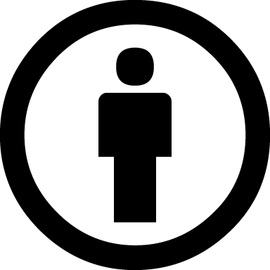
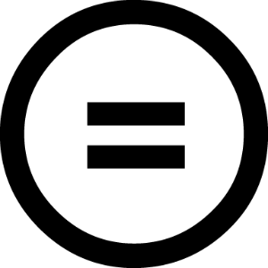
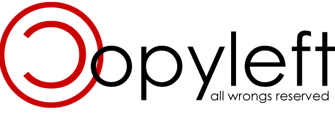

PROPIEDAD INTELECTUAL
Concepto de propiedad intelectual
La propiedad intelectual es el conjunto
de derechos que corresponden a los autores y a otros titulares
(artistas, productores, organismos de radiodifusión...) respecto de las
obras y prestaciones fruto de su creación.
Al Ministerio le
corresponde proponer las medidas, normativas o no, para lograr la
adecuada protección de la propiedad intelectual.
Derechos de la propiedad intelectual
Derechos morales
Frente a los sistemas de corte anglosajón, la legislación española es claramente defensora de los derechos morales, reconocidos para los autores y para los artistas intérpretes o ejecutantes. Estos derechos son irrenunciables e inalienables, acompañan al autor o al artista intérprete o ejecutante durante toda su vida y a sus herederos o causahabientes al fallecimiento de aquellos. Entre ellos destaca el derecho al reconocimiento de la condición de autor de la obra o del reconocimiento del nombre del artista sobre sus interpretaciones o ejecuciones, y el de exigir el respeto a la integridad de la obra o actuación y la no alteración de las mismas.
Derechos de carácter patrimonial
Se distingue entre:
1. Derechos relacionados con la explotación de la obra, que a su vez se subdividen en derechos exclusivos y en derechos de remuneración:
• Los derechos exclusivos son aquellos que permiten a su titular autorizar o prohibir los actos de explotación de su obra o prestación protegida por el usuario, y a exigir de este una retribución a cambio de la autorización que le conceda.
• Los derechos de remuneración, a diferencia de los derechos exclusivos, no facultan a su titular a autorizar o prohibir los actos de explotación de su obra o prestación protegida por el usuario, aunque sí obligan a este al pago de una cantidad dineraria por los actos de explotación que realice, cantidad esta que es determinada, bien por la ley o en su defecto por las tarifas generales de las entidades de gestión.
Derechos de autor y copyright
Concepto de derechos de autor y copyright
El concepto de derecho de autor reconoce al creador de la obra mientras que el copyright, representado por el símbolo ©, aparece cuando la obra ha sido publicada y está asociado a la idea "todos los derechos están reservados".
Las características más importantes de esta modalidad de propiedad intelectual son:
• Objeto protegido: Obras originales literarias, artísticas o científicas (incluidos programas de ordenador y bases de datos). La protección del Derecho de Autor abarca únicamente las expresiones, no las ideas, métodos ni conceptos
• Tipo de protección: Proporciona al creador original de la obra y a sus herederos capacidad legal para detentar el derecho exclusivo a utilizar o autorizar a terceros la utilización de la obra en condiciones convenidas de común acuerdo, vender los derechos sobre sus obras a terceras partes si así lo considera, y reivindicar la autoría de la obra y el derecho a oponerse a modificaciones de la misma que puedan atentar contra la reputación del creador.
• Duración: Toda la vida del autor más 70 años después de su muerte. No obstante, cada legislación nacional puede fijar plazos de protección más largos.
• Tipo: No es necesario el registro. La protección surge automáticamente al hecho de creación de la obra, conforme al Convenio de Berna.
• Organismo Competente: la mayoría de países cuenta con un sistema de registro y depósito facultativo de obras, aunque su registro es voluntario.
¿Cuándo pasa una obra a ser dominio público?
Las obras sujetas al derecho de autor pasan al dominio público a los 50 años de la muerte del autor. El plazo para el ingreso de las obras en dominio público se calcula a partir del 1 de enero del año siguiente de la muerte del autor, razón que ha llevado a que en esa fecha se celebre el Día del Dominio Público. El Convenio de Berna reconoce el derecho de los países signatarios a ampliar el plazo de la protección. Por ello, varios países han establecido plazos superiores, que llegan a 70, 80 o 100 años desde la muerte del autor.
Licencias de software
Concepto de licencia de software
Una licencia de software es un contrato entre el licenciante (autor/titular de los derechos de explotación/distribución) y el licenciatario (usuario consumidor, profesional o empresa) del programa informático, para utilizarlo cumpliendo una serie de términos y condiciones establecidas dentro de sus cláusulas, es decir, es un conjunto de permisos que un desarrollador le puede otorgar a un usuario en los que tiene la posibilidad de distribuir, usar o modificar el producto bajo una licencia determinada. Además, se suelen definir los plazos de duración, el territorio donde se aplica la licencia (ya que la licencia se soporta en las leyes particulares de cada país o región), entre otros.
Licencias Creative Commons
¿Qué es Creative Commons?
El Creative Commons es una organización sin fines de lucro con sede en Mountain View, California, Estados Unidos, dedicada a la ampliación de la gama de obras de creación disponibles para que otros puedan construir legalmente, y le otorga a un determinado autor el poder de decidir los límites de uso y explotación de su trabajo o creaciones en Internet.
Tipos de licencias Creative Commons
Condiciones: Reconocimiento-BY, No Comercial-NC, No Derivadas-ND, Compartir Igual-SA
• Reconocimiento (Attribution)
En cualquier uso o explotación que se haga de la obra autorizada por la licencia Creative Commons hará falta reconocer siempre la autoría de dicha obra.
En efecto, esta condición se exige en todas las licencias Creative Commons y no puede ser excluida por el autor, pues el reconocimiento de la autoría es
un derecho moral irrenunciable por parte del autor y todas las licencias
deben respetarlo y aplicarlo siempre.
• No Comercial (Non commercial)
Se prohíbe que la obra sea utilizada con fines comerciales (por ejemplo, el hilo musical en un negocio). Esta condición afecta al usuario, pero obviamente
no afecta al autor que sigue siendo en todo momento propietario del copyright o derechos de autor; por tanto, esta condición no impide que al autor pueda
comercializar con su obra.
• Sin obras derivadas (No Derivate Works)
La autorización para explotar la obra no incluye la transformación para crear una obra derivada (por ejemplo, traducir una obra literaria). El beneficiario de
la licencia solamente tiene el derecho de copiar, distribuir, exhibir y representar copias literales de la obra y no tiene el derecho de producir obras derivadas.
• Compartir Igual (Share alike)
La explotación autorizada incluye la creación de obras derivadas siempre que mantengan la misma licencia al ser divulgadas.
El autor puede escoger cómo
de obras derivadas siempre que mantengan la misma licencia al ser divulgadas.
El autor puede escoger cómo
combina estas condiciones; es decir, tiene un margen de libertad para reducir o ampliar el alcance de la autorización que da para el uso de su obra: por
ejemplo, el autor puede decidir excluir los usos comerciales de su obra o la modificación de ésta, o si la permite sólo bajo la condición de que la obra
resultante quede sujeta a la misma licencia.
Copyleft
Concepto de Copyleft
Copyleft es el término que se utiliza en el ámbito informático (y se aplica de manera análoga a la creación literaria y artística) para designar el tipo de protección jurídica que confieren determinadas licencias que garantizan el derecho de cualquier usuario a utilizar, modificar y redistribuir un programa o sus derivados, siempre que se mantengan estas mismas condiciones de utilización y difusión.
Es un método general para liberar un programa u otro tipo de trabajo (en el sentido de libertad, no de gratuidad), que requiere que todas las versiones modificadas y extendidas sean también libres.
La manera más simple de hacer que un programa sea software libre consiste en ponerlo en el dominio público, sin copyright. Esto permite compartir el programa y sus mejoras a quienes así lo deseen. Sin embargo, también posibilita que otra gente sin interés cooperativo convierta el programa en software privativo. Pueden hacer cambios, muchos o pocos, y distribuir el resultado como un producto privativo. Quienes reciban el programa modificado en esas condiciones no podrán disfrutar de la libertad que el autor original les dio. El intermediario se la ha arrebatado.
